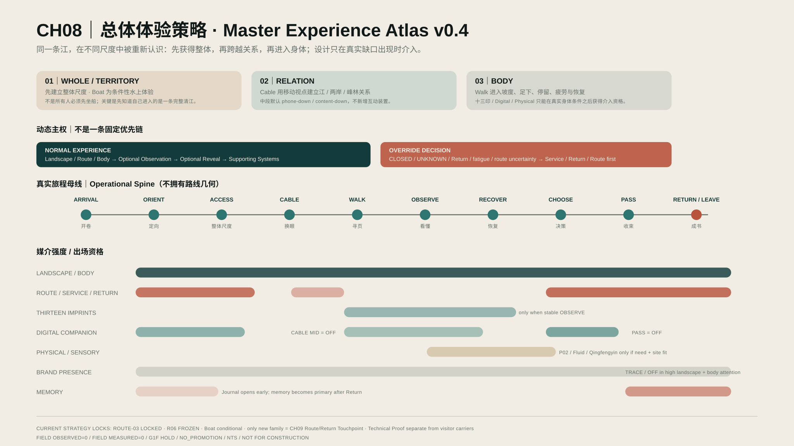

<section class="ch08-p01" id="ch08-p01" data-chapter="CH08" data-object="CH08-P01" data-version="1.1">
  <div class="wrap">
    <article data-authoring-page="CH08-P01" data-page-type="SYSTEM" data-surface-role="AUTHORING-CANDIDATE" aria-labelledby="ch08-p01-title">
      <header class="hero">
        <div class="hero-copy">
          <div class="meta">CH08 / P01 / MASTER DESIGN STRATEGY</div>
          <h1 id="ch08-p01-title">先获得整体，<br>再跨越关系，<br>最后进入身体。</h1>
          <p class="thesis">同一条江，在不同尺度中被重新认识；设计只在方向、理解、恢复或记忆出现真实缺口时介入。</p>
          <p class="lead">CH08 不是把 Route、十三印、App、实体、品牌与记忆重新堆在一起。它负责决定一次真实清江旅程如何发生尺度转换，以及已有设计何时有资格出现、何时必须退场。</p>
          <div class="hero-locks">
            <div class="lock"><b>ROUTE AUTHORITY</b><span>ROUTE-03 = LOCKED CURRENT；本页不拥有路线几何。</span></div>
            <div class="lock"><b>SCENE LOCK</b><span>R06 = FINISHED / FROZEN / NO REOPEN。</span></div>
            <div class="lock"><b>BOAT BOUNDARY</b><span>Boat = conditional water-scale experience，不是所有游客的 Universal Core。</span></div>
            <div class="lock"><b>INTERVENTION RULE</b><span>没有真实缺口时，NO DESIGN 仍然是正式方案。</span></div>
          </div>
        </div>

        <div class="scale-stage" aria-label="WHOLE RELATION BODY three-scale master thesis">
          <div class="scale-head">
            <div><div class="meta rev">QINGJIANG-SPECIFIC EXPERIENCE THESIS</div><h2>尺度转换本身，就是理解清江的方法。</h2></div>
            <p>EXPERIENCE SCALE ≠ TRANSPORT TASK · NARRATIVE DOES NOT CREATE ROUTE TRUTH</p>
          </div>

          <div class="scale-flow">
            <div class="scale-block">
              <div><div class="scale-no">01</div><h3>整体尺度</h3><div class="scale-en">WHOLE / TERRITORY</div><p>先建立完整江谷、两岸与宏观关系。水上游船是最强的条件性体验之一，但不是强制起点。</p></div>
              <div class="scale-boundary">BOAT = CONDITIONAL ACCESS / WATER-SCALE EXPERIENCE</div><i class="scale-arrow" aria-hidden="true"></i>
            </div>
            <div class="scale-block">
              <div><div class="scale-no">02</div><h3>关系尺度</h3><div class="scale-en">RELATION</div><p>Cable 用移动视点把江、两岸、峰林与步行网络放进同一空间关系；中段不需要额外互动。</p></div>
              <div class="scale-boundary">MOVING VIEWPOINT → PHONE DOWN / CONTENT DOWN</div><i class="scale-arrow" aria-hidden="true"></i>
            </div>
            <div class="scale-block">
              <div><div class="scale-no">03</div><h3>身体尺度</h3><div class="scale-en">BODY</div><p>Walk 后，坡度、足下、植被、岩壁、视线、停留、疲劳与恢复成为体验事实。</p></div>
              <div class="scale-boundary">READING / DIGITAL / PHYSICAL MUST EARN ADMISSION</div>
            </div>
          </div>

          <div class="scale-foot"><strong>MASTER JUDGMENT</strong><span>三种尺度不是三项任务；它们是同一条江从 Territory → Relation → Body 的认知变化。</span></div>
        </div>
      </header>

      <section class="section" aria-labelledby="atlas-title">
        <div class="section-head">
          <div class="idx"><div class="meta">01 / CURRENT MASTER ATLAS</div><div class="micro">EXISTING MATURE DESIGN / DIRECT REUSE</div></div>
          <div><h2 id="atlas-title">不重画第二张系统图，直接使用当前 v0.4 Atlas。</h2><p class="deck">这张可编辑 SVG 已经把尺度、Normal / Override、抽象旅程阶段与各载体的出场资格放在同一张母图中。P01 的界面职责是让它更容易被读，而不是替代它。</p></div>
        </div>

        <figure class="atlas-shell">
          <div class="atlas-toolbar"><strong>CH08_MASTER_EXPERIENCE_ATLAS_v0_4.svg</strong><span>2400×1350 · EDITABLE VECTOR · PHASE SPINE IS NOT ROUTE-03 GEOMETRY</span></div>
          <div class="atlas-viewport"></div>
          <figcaption class="atlas-caption">
            <p><b>READ</b>：先看三尺度，再看 NORMAL / OVERRIDE，最后看载体何时出现或退场。条带表达策略资格与相对强度，不是测量时间。</p>
            <p><b>BOUNDARY</b>：Phase spine 不是路线图；不包含 R01–R13 假坐标、现场距离、真实时长、坡度、容量或实时运营状态。</p>
          </figcaption>
        </figure>
      </section>

      <section class="section" aria-labelledby="mode-title">
        <div class="section-head">
          <div class="idx"><div class="meta">02 / DYNAMIC OWNERSHIP</div><div class="micro">NORMAL EXPERIENCE ≠ OVERRIDE DECISION</div></div>
          <div><h2 id="mode-title">大多数时候让清江保持第一读；只有现实要求决策时，服务与回程才临时接管。</h2><p class="deck">Service / Return 不是永久压在 Landscape 之前，而是在 CLOSED / UNKNOWN、Return urgency、路线不确定或身体恢复需求上升时获得当前决策权。</p></div>
        </div>

        <div class="mode-field">
          <div class="mode normal">
            <div>
              <div class="mode-label">A / NORMAL EXPERIENCE</div>
              <h3>真实清江保持第一阅读。</h3>
              <p>路线可理解、身体可继续、没有强回程或未知状态时，系统只逐步增加必要深度。</p>
              <div class="mode-chain"><span>LANDSCAPE / ROUTE / BODY</span><i></i><span>OPTIONAL OBSERVE</span><i></i><span>OPTIONAL REVEAL</span><i></i><span>SUPPORT</span><i></i><span>TRACE BRAND</span></div>
            </div>
            <div class="mode-foot">GOAL = KEEP REAL QINGJIANG AS FIRST READ · DIGITAL / PHYSICAL / BRAND MAY WITHDRAW WITHOUT SYSTEM FAILURE</div>
          </div>

          <div class="mode override">
            <div>
              <div class="mode-label">B / OVERRIDE DECISION</div>
              <h3>先解决“下一步怎么办”。</h3>
              <p>当现实无法支持继续自由探索时，当前决策临时覆盖可选内容；问题解除后，应尽快交还给 Normal Experience。</p>
              <div class="override-triggers"><span>CLOSED / UNKNOWN</span><span>RETURN URGENCY ↑</span><span>ROUTE UNCERTAINTY</span><span>FATIGUE / RECOVER</span><span>NO-PHONE / HUMAN HELP</span><span>INSUFFICIENT INFO</span></div>
              <div class="mode-chain"><span>SERVICE / RETURN</span><i></i><span>ROUTE</span><i></i><span>BODY SUPPORT</span><i></i><span>OPTIONAL CONTENT</span></div>
            </div>
            <div class="mode-foot">OVERRIDE IS TEMPORARY · UNKNOWN NEVER PRETENDS TO BE NORMAL · BRAND COLOR DOES NOT OWN OPERATIONAL STATE</div>
          </div>
        </div>

        <div class="handoff-strip"><strong>CONFLICT ARBITRATION ONLY WHEN NEEDED</strong><p>运营可信度边界 → 当前 Route / Return 决策 → 身体通过 / 恢复 → 真实景观 → 可选解释 → Brand / Memory。冲突解除后回到 Normal。</p><span>NO FIXED WHOLE-JOURNEY PRIORITY STACK</span></div>
      </section>

      <footer class="next-unit">
        <div><div class="meta">NEXT / CH08-P02</div><div class="micro">ENCOUNTER + FREEDOM</div></div>
        <div>
          <h3>下一页：先遇见，再解释；有空间秩序，但不做完成链。</h3>
          <p>P01 到此为止，不吞并后续单位。Encounter / Same-source Reveal、STOP ≠ READ、Minimum Sufficient Carrier、状态三轴与 Cross-system Handoff 将按 CH08 当前结构依次制作。</p>
          <div class="truth"><p>DOES NOT PROVE：现场真实开放状态、路径几何、精确时间 / 距离 / 坡度、疲劳阈值、应急疏散、安全、无障碍、容量、工程或实施批准。AUTHORING ID = CH08-P01；FINAL WEB PAGE-ID = UNALLOCATED。</p><strong>FIELD OBSERVED=0<br>FIELD MEASURED=0<br>G1F HOLD / NO_PROMOTION</strong></div>
        </div>
      </footer>
    </article>
  </div>
</section>
